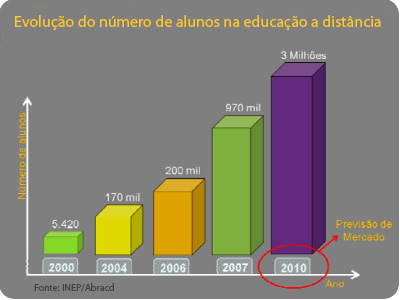

Relação UFU x Ensino a distância(){
Mundo Acadêmico
Por: Guilherme Castilho Casassanta
Todos os anos, pessoas deslocam de suas residências para frequentar o ensino superior em cursos presenciais. Mas, por trás de tudo, existem aquelas que exercem algum ofício e não possuem essa oportunidade de se deslocar.
Ensino a Distância
Em busca de sanar o problema daqueles que não frequentam o ensino superior por alguma dificuldade, tais como dificuldade de se deslocar para cursos presenciais e falta de tempo, foi criado o sistema de Ensino a Distância.
Este sistema consiste na relação Professor/Aluno por meio da tecnologia, destacando-se a Internet, por meio da qual os professores ministram suas aulas através de vídeo-conferências. A UFU (Universidade Federal de Uberlândia), que hoje conta com o apoio e intermédio do CEaD (Centro de Educação a Distância), debatia sobre Ensino a Distância desde 1997 mas, somente em 2004 oficializou, por meio do Conselho Universitário, o Ensino a Distância.
Processos Seletivos
A Universidade Federal de Uberlândia disponibiliza Processo Seletivo para os seguintes cursos a distância:
- Graduação: Administração, Administração Pública, Pedagogia, Letras-Inglês, Letras-Espanhol.
- Especialização: Gestão Pública, Gestão Pública Municipal, Gestão de Saúde.
Além dos cursos, a UFU também disponibiliza processos seletivos para:
-
Estagiários: Cuja contratação é temporária com atuação na unidade administrativa do CeaD ou nas unidades acadêmicas dos Cursos a Distância.
-
Tutores: Também contratação temporária para a formação do banco de tutores presenciais e tutores a distância.
-
Professores: Formação da rede de professores/pesquisadores (autores e formadores) para atuar nas disciplinas dos Cursos a Distância.
Dilema dos Diplomas para Cursos de Ensino a Distância
Muitas pessoas deixam de ingressar em Cursos de Ensino a Distância achando que o diploma obtido ao término não dispõe do mesmo valor do diploma de um curso presencial.
Este pensamento está errado, uma vez que o diploma do curso a distância é válido e regulamentado pela Constituição, por meio do Decreto 5.622, de 19/12/2005:
Art. 5º Os diplomas e certificados de cursos e programas a distância, expedidos por instituições credenciadas e registrados na forma da lei, terão validade nacional.
Seja um diploma de curso presencial ou de curso a distância, ambos possuem validade nacional uma vez que obedeçam os seguintes tópicos:
- Instituição de ensino superior credenciada para educação a distância no MEC;
- Cursos Superior reconhecido;
- Diploma Registrado.
Essa dúvida quanto aos diplomas de cursos de ensino a distância está sendo aos poucos extinguida, deixando os cursos de ensino a distância, a cada ano, em um patamar próximo ao de cursos presenciais quanto ao números de alunos, algo evidente no gráfico a baixo.

Vídeo: Reitor da Universidade Federal de Uberlândia fala a respeito do Ensino a Distância.
Referências:
www.cead.ufu.br
webartigos.com
educacaoadistancia.blog.br
correiodeuberlandia.com.br
educalivre.wordpress.com
*Exclusivo do Diploma de Ensino a Distância.
}